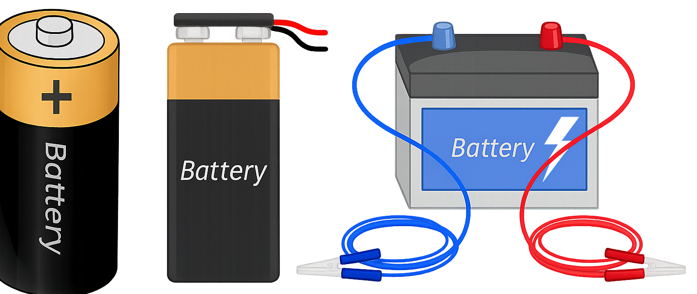
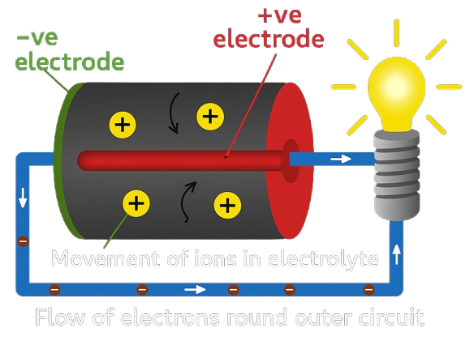

What is a battery?
A battery is a compact device that stores chemical energy and transforms it into electrical energy on demand. Unlike the electricity we receive from the grid—which is generated in distant power plants and travels long distances through power lines—a battery works independently, using internal chemical reactions to generate power precisely when and where it's needed. This makes batteries essential for powering everything from tiny hearing aids to massive electric vehicles. The concept of storing energy for later use has existed for centuries, but it was the invention of the modern battery that revolutionized portable power. In earlier times, people relied on fire as their primary energy source, requiring wood or coal to be burned for heat or motion. These methods were powerful but slow and inefficient. A campfire could take time to ignite, and steam engines needed hours to build pressure. In contrast, a battery delivers energy instantly—press a button on your phone or start an electric car, and it responds immediately. That’s the power of stored electricity, always ready when you need it.
What are the main parts of a battery?
A battery may look like a simple object on the outside, but inside it contains several critical components that work together to generate electricity. The three main parts of any battery are the anode, the cathode, and the electrolyte. The anode is the negative terminal, and the cathode is the positive terminal. These two ends are made of different materials, and the difference between them creates a chemical potential—essentially, a tension that wants to release energy. Between them lies the electrolyte, a substance that allows charged particles (ions) to move back and forth during a chemical reaction. This internal movement of ions is what causes electrons to flow through an external circuit, producing usable electrical power. Some batteries may also include other components like a separator (to prevent the anode and cathode from touching and short-circuiting), and a casing (to protect and contain the internal parts). Together, these pieces form a self-contained system capable of storing energy for later use and delivering it safely and efficiently when needed.
How does a battery really work?
A battery works by turning stored chemical energy into electrical energy through a process called a redox reaction. Inside the battery, the anode (negative side) and cathode (positive side) are made of different materials that react with the electrolyte between them. When the battery is connected to a device, a chemical reaction causes electrons to flow out of the anode, through the external circuit (your device), and into the cathode. As electrons move through the device, they provide power—lighting a bulb, running a motor, or charging your phone. Meanwhile, positively charged ions inside the battery move through the electrolyte to balance the reaction. This flow of electrons and ions continues until the battery’s chemical energy is used up, at which point the battery is “dead” and needs to be replaced or recharged. In rechargeable batteries, like those in laptops or electric cars, the chemical reaction is reversed when plugged in—pushing the electrons back to their original positions so the battery can be used again. It's a controlled, portable energy system that brings power right to your pocket.
Measuring batteries
When it comes to electric vehicles, measuring a battery isn’t just about its size — it's about how much energy it can store and how long it can power your car. The two most important units are kilowatt-hours (kWh) and volts/amps. A kilowatt-hour measures the total amount of energy the battery can hold, just like a fuel tank in a gasoline car. For example, a 60 kWh battery means the car can use 1 kilowatt of energy for 60 hours — or more realistically, drive around 250–400 kilometers on a full charge, depending on efficiency. Voltage tells you how much force is pushing the electricity through the system, while current (measured in amperes) tells you how much electricity is flowing. Together, they determine how powerful the battery is — how fast it can accelerate the car or how quickly it can recharge. Measuring EV batteries helps manufacturers balance between range, performance, and charging time — and it helps drivers choose a car that fits their lifestyle.